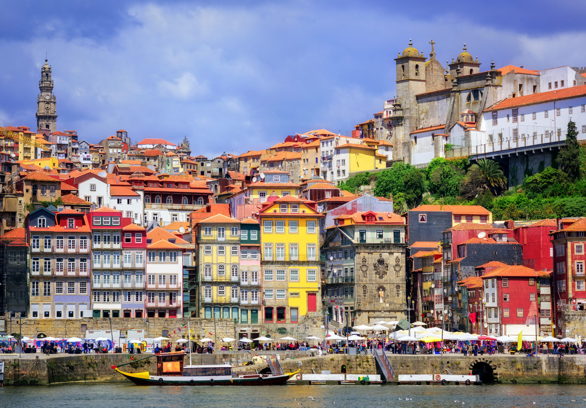
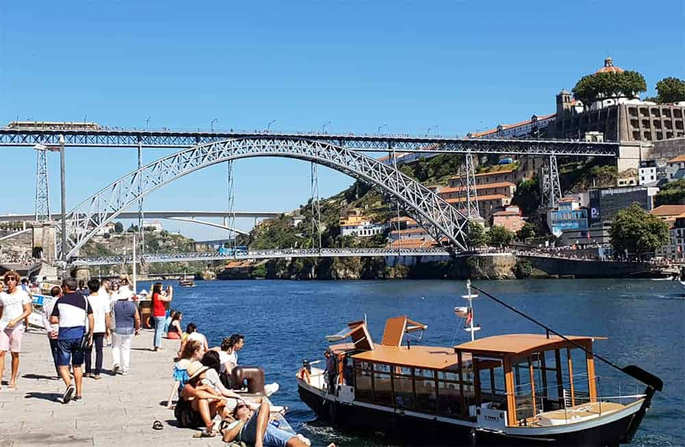
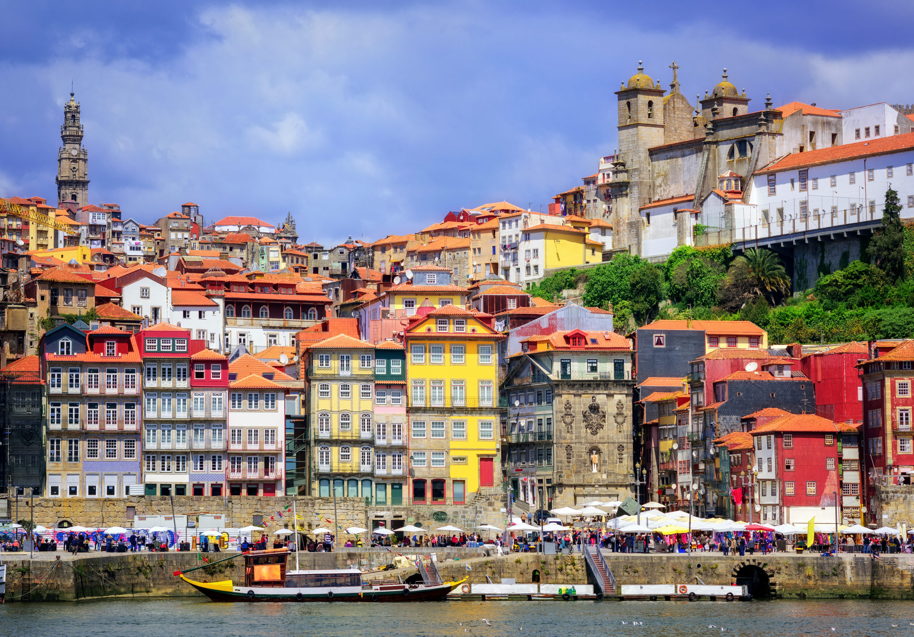
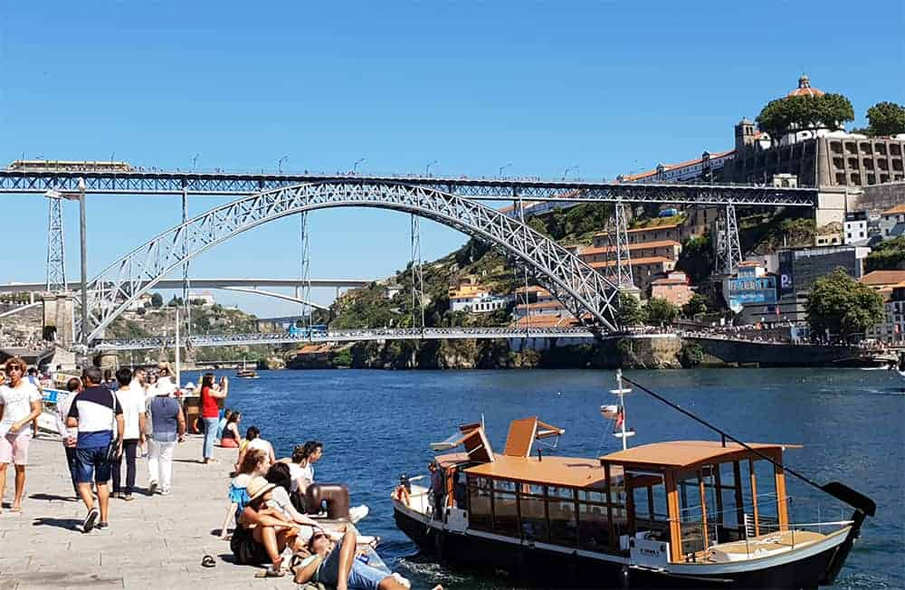

The historic Ribeira District is a charming neighborhood located along the Douro River in Porto. Known for its picturesque streets and vibrant atmosphere, Ribeira is a UNESCO World Heritage site that captures the essence of Porto's rich history and culture.
Wander through the narrow, winding streets, and you'll encounter colorful buildings that reflect the city's maritime past. The district is a hub of activity, with numerous cafes, restaurants, and shops offering a delightful experience for visitors.
As you explore Ribeira, you'll be captivated by the stunning views of the Douro River and the iconic Dom Luís I Bridge. The riverside promenade is perfect for a leisurely stroll, allowing you to soak in the beauty of the city.
 



Livraria Lello, located in Porto, is one of the most iconic and beautiful bookstores in the world.
With its neo-gothic architecture and intricate wooden details, the bookstore is a haven for book lovers and architecture enthusiasts alike. It is known for its grand staircase, stained glass, and the magical ambiance that inspired J.K. Rowling while she was writing the Harry Potter series.
Jardim do Morro, situated across the Douro River in Vila Nova de Gaia, provides a stunning panoramic view of the city of Porto. This garden is perched on the hillside, offering a peaceful escape with well-maintained greenery and pathways. Visitors can enjoy a leisurely stroll through the garden while taking in breathtaking views of Porto's historic skyline, including landmarks such as the Ribeira District, Dom Luís I Bridge, and the riverside architecture. Jardim do Morro is not only a beautiful garden but also a perfect vantage point to appreciate the charm and beauty of Porto from a different perspective.
Capela do Sr da Pedra is a charming chapel located in Gaia, a council of Porto. It holds historical and cultural significance, offering visitors a glimpse into the rich heritage of the region.
The chapel is known for its unique architecture and serene surroundings. It stands as a testament to the cultural diversity and religious traditions of the area.
Take a moment to explore the beauty of Capela do Sr da Pedra and appreciate the historical gems that contribute to the cultural tapestry of Porto and its surrounding areas.